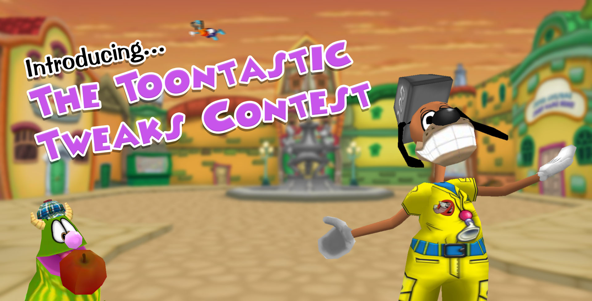

Toontastic Tweaks Are Comin' To Town!
Posted by: Flippy Jr. on March 7, 2020 at 6:01 PM
You know, every once in awhile we all need to appreciate the wonderful world we call home: Toontown Relived. I like to go into my Estate, curl up by the fireplace, dig up bones in Daisy’s Garden (Sorry not sorry Daisy!), and of course stop those menacing Cogs! But above all else- my favorite part of Toontown Relived? That’s easy.
Every second of every day… YOU are the best part! As a member of the Toon Council, it is my job to not only be a friend to all--but to be a bridge between you and the rest of the Toontown Relived team. We want to give you the opportunity to add anything you want into Toontown! This could be anything from a feature, tweak, and anything in between! We want to hear your thoughts!

Send in an idea!
All you have to do is click the button above, fill out the form, and be as descriptive as possible. As an example, if you wanted to add a new street to the game where would you put it? Would you add it to Goofy Speedway? Acorn Acres? What would the name be? Any specific cog types? Also- be sure to give us an idea of what you think it should look like!
Did I forget to mention something… I can’t put my glove on it. YES! The Top 5 suggestions will be featured in an upcoming update to Toontown Relived! The contest ends April 1st at 11:59 P.M. Toontown Time (Pacific Standard Time). What are you waiting for? Get creative, get excited, and get thinking! This is YOUR town! Please contact us on Discord or via email if you need assistance! Are YOU Toon Enough?!